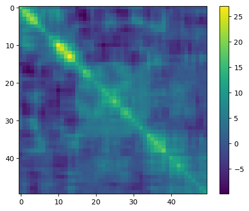
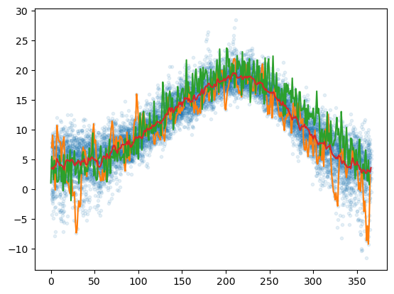

import numpy as np
import matplotlib.pyplot as plt
import pandas as pd
---------------------------------------------------------------------------
ModuleNotFoundError Traceback (most recent call last)
Cell In[1], line 3
1 import numpy as np
2 import matplotlib.pyplot as plt
----> 3 import pandas as pd
ModuleNotFoundError: No module named 'pandas'
All temperatures#
df = pd.read_csv('data.csv',usecols=[0,3])
df
| date | avg_temperature | |
|---|---|---|
| 0 | 2023-04-13 | 7.10 |
| 1 | 2023-04-12 | 5.19 |
| 2 | 2023-04-11 | 8.00 |
| 3 | 2023-04-10 | 7.69 |
| 4 | 2023-04-09 | 9.30 |
| ... | ... | ... |
| 9995 | 1995-12-01 | 6.40 |
| 9996 | 1995-11-30 | 9.15 |
| 9997 | 1995-11-29 | 11.50 |
| 9998 | 1995-11-28 | 9.75 |
| 9999 | 1995-11-27 | 6.90 |
10000 rows × 2 columns
df['avg_temperature'].to_csv('data1.csv',header=False,index=False)
df = pd.read_csv('data.csv',usecols=[0,3])
date = pd.to_datetime(df['date'])
df['year'] = date.dt.year
#df['month'] = date.dt.month
#df['day'] = date.dt.day
df['dayofyear'] = date.dt.dayofyear
df.columns = ['date','T','year','dayofyear']
df = df.iloc[::-1].reset_index(drop=True)
df = df[35:-103]
df.info()
<class 'pandas.core.frame.DataFrame'>
RangeIndex: 9862 entries, 35 to 9896
Data columns (total 4 columns):
# Column Non-Null Count Dtype
--- ------ -------------- -----
0 date 9862 non-null object
1 T 9862 non-null float64
2 year 9862 non-null int64
3 dayofyear 9862 non-null int64
dtypes: float64(1), int64(2), object(1)
memory usage: 308.3+ KB
df.head()
| date | T | year | dayofyear | |
|---|---|---|---|---|
| 35 | 1996-01-01 | 7.05 | 1996 | 1 |
| 36 | 1996-01-02 | 9.10 | 1996 | 2 |
| 37 | 1996-01-03 | 6.85 | 1996 | 3 |
| 38 | 1996-01-04 | 2.09 | 1996 | 4 |
| 39 | 1996-01-05 | -0.10 | 1996 | 5 |
df.tail()
| date | T | dayofyear | |
|---|---|---|---|
| 9892 | 2022-12-27 | 8.10 | 361 |
| 9893 | 2022-12-28 | 5.80 | 362 |
| 9894 | 2022-12-29 | 4.84 | 363 |
| 9895 | 2022-12-30 | 7.80 | 364 |
| 9896 | 2022-12-31 | 5.90 | 365 |
T = df.pivot(index='year',columns='dayofyear',values='T').fillna(method='ffill').values
plt.plot(T[:,300],T[:,302],'.')
[<matplotlib.lines.Line2D at 0x7fd67cb83940>]
S = np.cov(T.T)
S.shape
(366, 366)
A = T - T.mean(axis=0)
SA = 1/367**.5*(A.T @ A)
SA.shape
(366, 366)
evals,evecs = la.eig(S)
plt.plot(evals.real,'.')
[<matplotlib.lines.Line2D at 0x7fd65f224760>]
plt.imshow(SA[:50,:50]), plt.colorbar()
plt.show()

plt.imshow(S[:50,:50]), plt.colorbar()
plt.show()
import scipy.linalg as la
la.cholesky(S)
---------------------------------------------------------------------------
LinAlgError Traceback (most recent call last)
Cell In[98], line 1
----> 1 la.cholesky(S)
File ~/anaconda3/lib/python3.10/site-packages/scipy/linalg/_decomp_cholesky.py:89, in cholesky(a, lower, overwrite_a, check_finite)
45 def cholesky(a, lower=False, overwrite_a=False, check_finite=True):
46 """
47 Compute the Cholesky decomposition of a matrix.
48
(...)
87
88 """
---> 89 c, lower = _cholesky(a, lower=lower, overwrite_a=overwrite_a, clean=True,
90 check_finite=check_finite)
91 return c
File ~/anaconda3/lib/python3.10/site-packages/scipy/linalg/_decomp_cholesky.py:37, in _cholesky(a, lower, overwrite_a, clean, check_finite)
35 c, info = potrf(a1, lower=lower, overwrite_a=overwrite_a, clean=clean)
36 if info > 0:
---> 37 raise LinAlgError("%d-th leading minor of the array is not positive "
38 "definite" % info)
39 if info < 0:
40 raise ValueError('LAPACK reported an illegal value in {}-th argument'
41 'on entry to "POTRF".'.format(-info))
LinAlgError: 27-th leading minor of the array is not positive definite
plt.plot(df['dayofyear'],df['T'],'.',alpha=0.1,lw=0)
plt.plot(df1['dayofyear'],df1['T'])
t = np.arange(0,365)
plt.plot(t,11.5-8*np.cos(2*np.pi*(t - 27)/365) + 2*np.random.randn(365))
Tmean = df.groupby('dayofyear').mean().loc[:,'T']
plt.plot(Tmean)
plt.show()

df.groupby('dayofyear').mean().loc[:,'T']
dayofyear
1 3.527143
2 3.671429
3 3.381786
4 3.877500
5 3.961786
...
362 3.310357
363 3.082857
364 3.139643
365 2.901786
366 3.637143
Name: T, Length: 366, dtype: float64
import time
def measure():
t = []
go = True
while go:
val = input('Clock it? (Enter anything to stop): ')
if val == '':
t.append(time.time())
print(t[-1])
else:
go = False
return np.array(t)
t = measure()
1697139774.5365188
1697139778.233909
1697139780.2138119
1697139783.721882
1697139787.7696
1697139787.993941
1697139790.086307
1697139791.3756459
1697139792.1385002
1697139794.135038
1697139794.310941
1697139794.5187259
1697139797.964779
1697139798.45056
1697139802.373572
1697139803.031779
1697139803.311133
1697139804.1118941
1697139805.5170088
t
array([1.69713977e+09, 1.69713978e+09, 1.69713978e+09, 1.69713978e+09,
1.69713979e+09, 1.69713979e+09, 1.69713979e+09, 1.69713979e+09,
1.69713979e+09, 1.69713979e+09, 1.69713979e+09, 1.69713979e+09,
1.69713980e+09, 1.69713980e+09, 1.69713980e+09, 1.69713980e+09,
1.69713980e+09, 1.69713980e+09, 1.69713981e+09])